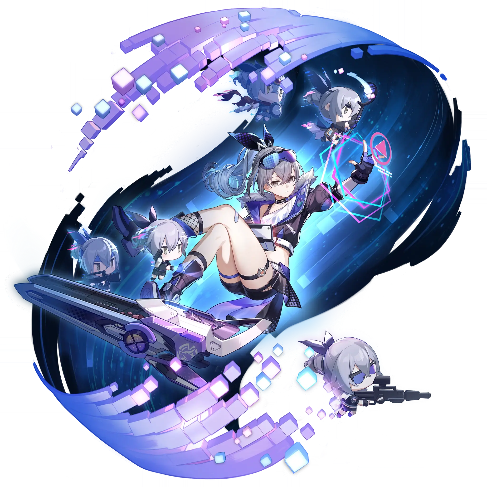

Silver Wolf
Best Silver Wolf build guide for Honkai Star Rail. See Silver Wolf's best Relics, Light Cones, teams, Eidolons, Trace priority, and how to play Silver Wolf.
🔍 Detail Skill
Semua skill aktif dan pasif beserta efeknya.
Deals Quantum DMG equal to #1[i]% of Silver Wolf's ATK to a single enemy.
There is a #2[i]% base chance to add 1 Weakness of an on-field ally target's Type to one designated enemy target (prioritizes implanting the Weakness corresponding to the first ally target in the lineup), also reducing the enemy target's RES to that Weakness Type by #4[i]% for #3[i] turn(s). If the enemy target already has that Type Weakness, the RES reduction effect to that Type will not be trigg
Silver Wolf can create three types of "Bugs": Reduce ATK by #1[i]%, reduce DEF by #2[i]%, and reduce SPD by #3[i]%. After every attack launched by Silver Wolf, she has a #4[i]% base chance to implant 1 random "Bug" that lasts for #5[i] turn(s) in the attacked enemy target. When the enemy target is defeated, the Weakness Silver Wolf implanted on it will be transferred to another surviving enemy on
⚔ Light Cone Terbaik
Diurutkan dari yang paling kuat. Persentase menunjukkan performa relatif terhadap pilihan terbaik.
💎 Relic Set Terbaik
Set terbaik untuk karakter ini, diurutkan berdasarkan prioritas.
📊 Stat Utama
Stat yang dicari pada tiap slot.
👥 Tim yang Direkomendasikan
Karakter yang sering dipasangkan bersama Silver Wolf.
 Acheron
Acheron
 Archer
Archer
 Sparkle
Sparkle
 Dan Heng • Permansor Terrae
Dan Heng • Permansor Terrae
🔗 Lanjutkan
Build ini dirangkum dari Prydwen Institute. Starwise tidak menghitung sendiri. Angka bisa berubah setelah patch atau karakter baru rilis.